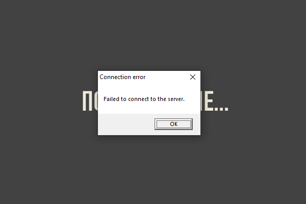
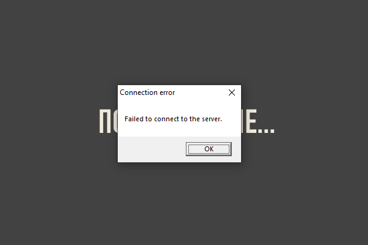
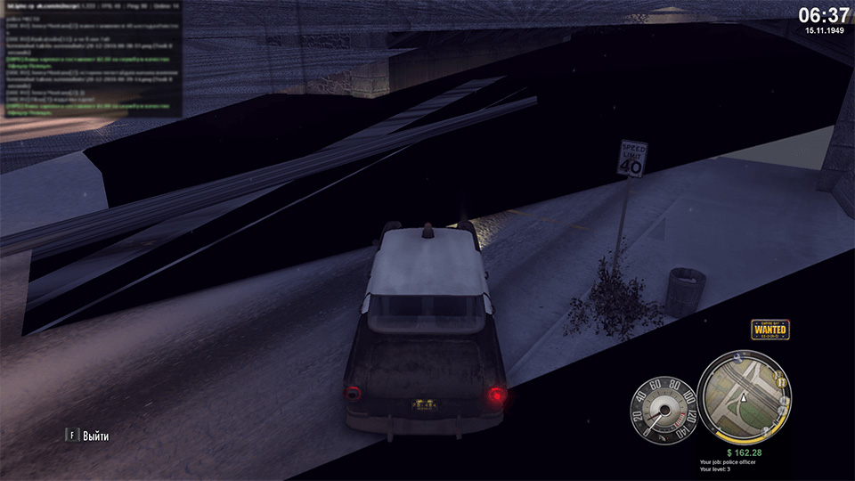
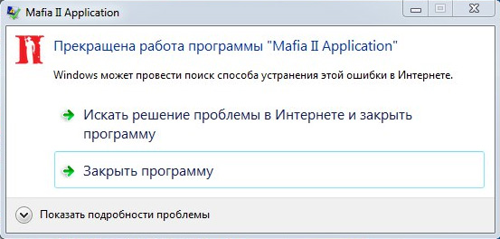

Проблема 1: Ошибка "Failed to connect to the server"

Решение: Если вы из Украины (или другой страны, у которых с РФ не очень хорошие отношения), то попробуйте подключиться с включенным VPN.
Мы подготовили подробные решения на большинство проблем с
мультиплеером.
Надеемся, они вам помогут.

Решение: Если вы из Украины (или другой страны, у которых с РФ не очень хорошие отношения), то попробуйте подключиться с включенным VPN.
Описание проблемы: Примерно каждые 15-20 минут в небе начинают появляться чёрные фигуры. Потом игра вылетает с ошибкой.

Решение: Выполните следующие шаги:
1)
Нажмите правой кнопкой мыши (ПКМ) на рабочем столе.
2)
Выберите пункт
NVIDIA Control Panel.
3) В
появившемся окне слева в блоке
3D Settings выберите пункт
Configure Surround, PhysX.
4) В
правой части окна найдите блок
PhysX settings, для поля
Processor выберите пункт
CPU.
5) Нажмите кнопку
Apply в нижней части окна, чтобы
сохранить изменения.

Решение:
Скачайте архив и распакуйте его содержимое в корень
игры.
Ниже представлено два варианта. Попробуйте оба, должно
помочь.
Mafia-2-Shadows-Fix-v1.zip
Mafia-2-Shadows-Fix-v2.zip
Решение: Нажмите на клавиатуре клавишу F4

Решение: Попробуйте решение из текста
ошибки.
1) Закройте Steam: правой кнопкой мыши на иконке рядом с
часами -> Выход;
2) Закройте Epic Game Launcher;
3) Закройте Discord;
4) Закройте программы записи экрана (Bandicam, Fraps,
OBS или другие);
5) Закройте Skype, Viber;
6) Закройте все браузеры (Chrome, Firefox,
Яндекс.Браузер и т.д.);
7) Закройте все программы для работы с графикой и видео
(Photoshop, GIMP, Sony Vegas и т.п.);
8) Просто перезапустите компьютер.

Решение, если ошибка появляется ПРИ ЗАПУСКЕ
игры:
1) Временно выключите антивирус (Avira, Avast,
Kaspersky и др). Чтобы мультиплеер работал, ему надо
встроиться в игру (выполнить inject в процесс игры).
Антивирусы считают это действие подозрительным;
2)
Очистите содержимое папок pc/cache и
pc/crashes в директории с игрой;
3)
Выставите режим совместимости Windows XP (пакет
обновления 3) или Windows 98 (как это сделать смотрите
здесь);
4) Скачайте и установите
PhysX;
Если у Вас ноутбук и предыдущие пункты не помогли, то в
"Диспетчере устройств" временно отключите
основную видеокарту:
1) Нажимаем сочетание клавиш
Win+R;
2) В появившемся окне вводим devmgmt.msc.
Нажимаем Enter;
3) Открываем раздел «Видеоадаптеры»;
4) Выбираем
внешний адаптер, кликаем по нему правой кнопкой мыши и
выбираем «Отключить».

Решение, если ошибка появляется ВО ВРЕМЯ
игры:
1) Зайдите в Настройки лончера
(шестерёнка в правом верхнем углу)
2) Снимите
галочку с пункта Полноэкранный режим
3) Закройте Настройки
4)
Нажмите кнопку Играть
5) Поиграйте
и понаблюдайте. Очень высока вероятность, что вылетов
игры в оконном режиме будет значительно меньше.


Решение: В первую очередь обновите
драйвер вашей видеокарты. Скачать драйвер вы можете на
сайте производителя вашей видеокарты.
Затем,
скачайте следующие файлы и установите именно в такой
последовательности:
1) Microsoft Visual C++ 2005 Redistributable Package
2) Microsoft Visual C++ 2008 Redistributable Package
3) Microsoft Visual C++ 2010 Redistributable Package
4) Распространяемый пакет Visual C++ для Visual Studio 2012
5) Распространяемые пакеты Visual C++ для Visual Studio 2013
6) Распространяемый пакет Visual C++ для Visual Studio 2015
7) Microsoft .NET Framework 4.6
8) PhysX. Только для видеокарт NVIDIA GeForce (не для AMD Radeon!).
Это все решения известных нам проблем. Знаете ещё? Поделитесь ими с нами в Discord!